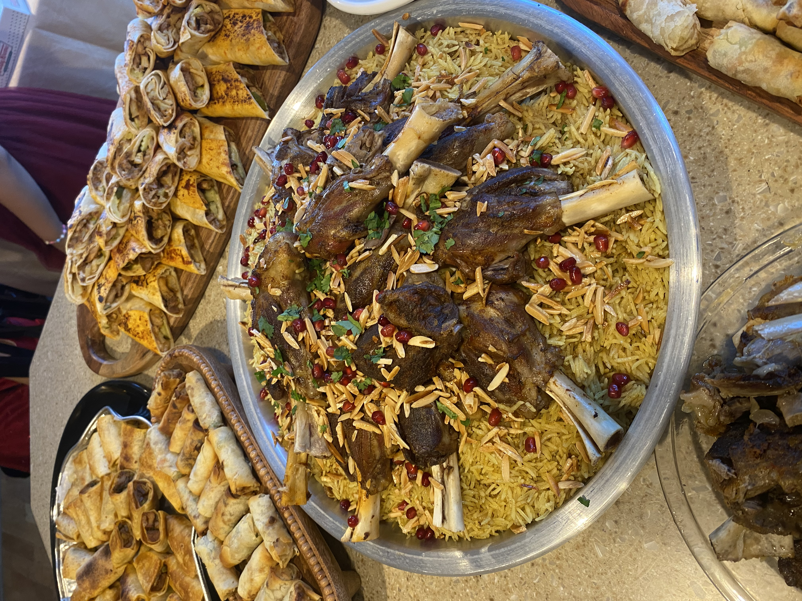
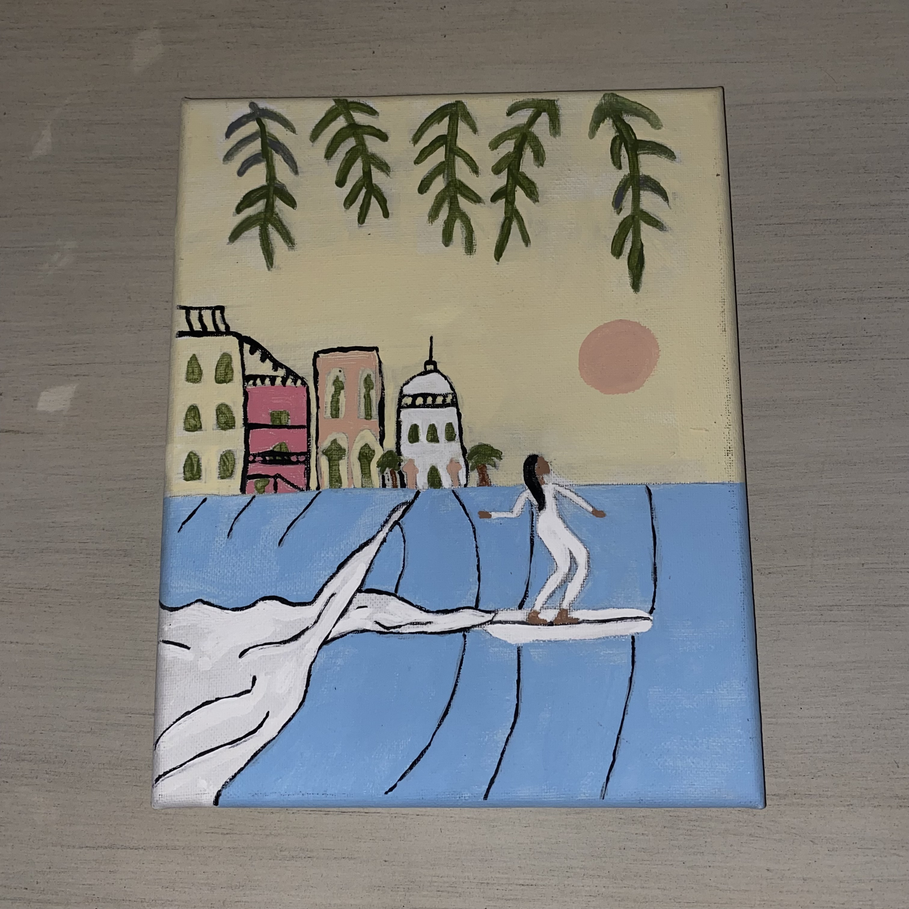

Outside of my academic and career goals, I enjoy activities that let me be creative, thoughtful, and open to new experiences. Some of my favorite hobbies are cooking, painting, and traveling. These interests reflect different parts of my personality and help show who I am beyond school and technical work.

I enjoy cooking because it gives me the chance to be creative and make something meaningful for others. I especially like trying new recipes and learning different ways to prepare food.

Painting is one of the ways I relax, It is like therapy for me. I like how it allows me to turn ideas into something visual and personal.
I enjoy traveling because it lets me explore new places, experience different environments, and learn more about the world around me.